This vignette describes the core functionality of the package by identifying common trends in the longitudinal dataset that is included with the package. We begin by loading the required package and the latrendData dataset.
The latrendData is a synthetic dataset for which the reference group of each trajectory is available, as indicated by the Class column. We will use this column at the end of this vignette to validate the identified model.
head(latrendData)
#> Id Time Y Class
#> 1 1 0.0000000 -1.08049205 Class 1
#> 2 1 0.2222222 -0.68024151 Class 1
#> 3 1 0.4444444 -0.65148373 Class 1
#> 4 1 0.6666667 -0.39115398 Class 1
#> 5 1 0.8888889 -0.19407876 Class 1
#> 6 1 1.1111111 -0.02991783 Class 1Many of the functions of the package require the specification of the trajectory identifier variable (named Id) and the time variable (named Time). For convenience, we specify these variables as package options.
options(latrend.id = "Id", latrend.time = "Time")Prior to attempting to model the data, it is worthwhile to visually inspect it.
plotTrajectories(latrendData, response = "Y")
Visualizing the trajectories of the latrend dataset.
The presence of clusters is not apparent from the plot. With any longitudinal analysis, one should first consider whether clustering brings any benefit to the representation of heterogeneity of the data over a single common trend representation, or a multilevel model. In this demonstration, we omit this step under the prior knowledge that the data was generated via distinct mechanisms.
Assuming the appropriate (cluster) trajectory model is not known in advance, non-parametric longitudinal cluster models can provide a suitable starting point.
As an example, we apply longitudinal \(k\)-means (KML). First, we need to define the method. At the very least we need to indicate the response variable the method should operate on. Secondly, we should indicate how many clusters we expect. We do not need to define the id and time arguments as we have set these as package options. We use the nbRedrawing argument provided by the KML package for reducing the number of repeated random starts to only a single model estimation, in order to reduce the run-time of this example.
kmlMethod <- lcMethodKML(response = "Y", nClusters = 2, nbRedrawing = 1)
kmlMethod
#> lcMethodKML specifying "longitudinal k-means (KML)"
#> time: getOption("latrend.time")
#> id: getOption("latrend.id")
#> nClusters: 2
#> nbRedrawing: 1
#> maxIt: 200
#> imputationMethod:"copyMean"
#> distanceName: "euclidean"
#> power: 2
#> distance: function() {}
#> centerMethod: meanNA
#> startingCond: "nearlyAll"
#> nbCriterion: 1000
#> scale: TRUE
#> response: "Y"As seen in the output from the lcMethodKML object, the KML method is defined by additional arguments. These are specific to the kml package.
The KML model is estimated on the dataset via the latrend function.
kmlModel <- latrend(kmlMethod, data = latrendData)
#> ~ Fast KmL ~
#> *SNow that we have fitted the KML model with 2 clusters, we can print a summary by calling:
kmlModel
#> Longitudinal cluster model using longitudinal k-means (KML)
#> lcMethodKML specifying "longitudinal k-means (KML)"
#> time: "Time"
#> id: "Id"
#> nClusters: 2
#> nbRedrawing: 1
#> maxIt: 200
#> imputationMethod:"copyMean"
#> distanceName: "euclidean"
#> power: 2
#> distance: function () {}
#> centerMethod: function (x) { mean(x, na.rm = TRUE)}
#> startingCond: "nearlyAll"
#> nbCriterion: 1000
#> scale: TRUE
#> response: "Y"
#>
#> Cluster sizes (K=2):
#> A B
#> 110 (55%) 90 (45%)
#>
#> Number of obs: 2000, strata (Id): 200
#>
#> Scaled residuals:
#> Min. 1st Qu. Median Mean 3rd Qu. Max.
#> -3.83836 -0.60818 0.02327 0.00000 0.64356 3.49294As we do not know the best number of clusters needed to represent the data, we should consider fitting the KML model for a range of clusters. We can then select the best representation by comparing the solutions by one or more cluster metrics.
We can specify a range of lcMethodKML methods based on a prototype method using the lcMethods function. This method outputs a list of lcMethod objects. A structured summary is obtained by calling as.data.frame.
kmlMethods <- lcMethods(kmlMethod, nClusters = 1:8)
as.data.frame(kmlMethods)
#> .class time id nClusters nbRedrawing maxIt imputationMethod distanceName
#> 1 lcMethodKML Time Id 1 1 200 copyMean euclidean
#> 2 lcMethodKML Time Id 2 1 200 copyMean euclidean
#> 3 lcMethodKML Time Id 3 1 200 copyMean euclidean
#> 4 lcMethodKML Time Id 4 1 200 copyMean euclidean
#> 5 lcMethodKML Time Id 5 1 200 copyMean euclidean
#> 6 lcMethodKML Time Id 6 1 200 copyMean euclidean
#> 7 lcMethodKML Time Id 7 1 200 copyMean euclidean
#> 8 lcMethodKML Time Id 8 1 200 copyMean euclidean
#> power distance centerMethod startingCond nbCriterion scale response
#> 1 2 function() {} meanNA nearlyAll 1000 TRUE Y
#> 2 2 function() {} meanNA nearlyAll 1000 TRUE Y
#> 3 2 function() {} meanNA nearlyAll 1000 TRUE Y
#> 4 2 function() {} meanNA nearlyAll 1000 TRUE Y
#> 5 2 function() {} meanNA nearlyAll 1000 TRUE Y
#> 6 2 function() {} meanNA nearlyAll 1000 TRUE Y
#> 7 2 function() {} meanNA nearlyAll 1000 TRUE Y
#> 8 2 function() {} meanNA nearlyAll 1000 TRUE YThe list of lcMethod objects can be fitted using the latrendBatch function, returning a list of lcModel objects.
kmlModels <- latrendBatch(kmlMethods, data = latrendData, verbose = FALSE)
kmlModels
#> List of 8 lcModels with
#> .name .method seed nClusters
#> 1 1 kml 1753232290 1
#> 2 2 kml 1711075799 2
#> 3 3 kml 690659598 3
#> 4 4 kml 265368763 4
#> 5 5 kml 758296545 5
#> 6 6 kml 1649722645 6
#> 7 7 kml 2137634742 7
#> 8 8 kml 2112708938 8We can compare each of the solutions via one or more cluster metrics. Considering the consistent improvements achieved by KML for an increasing number of clusters, identifying the best solution by minimizing a metric would lead to an overestimation. Instead, we perform the selection via a manual elbow method, using the plotMetric function.
plotMetric(kmlModels, c("logLik", "BIC", "WMAE"))Elbow plots of three relevant cluster metrics across the fitted models.
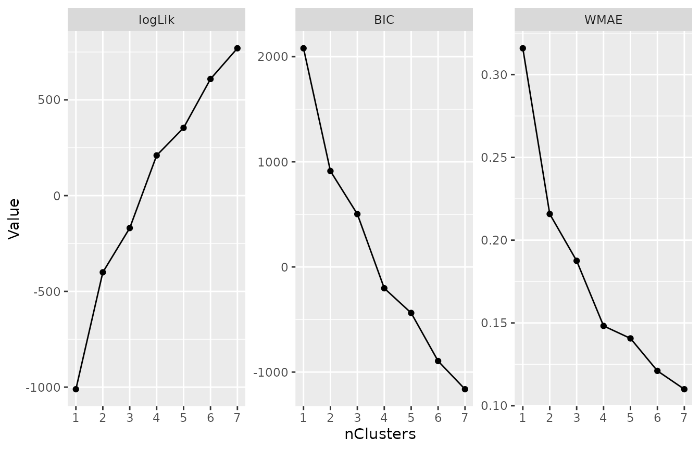We have selected the 4-cluster model as the preferred representation. We will now inspect this solution in more detail. Before we can start, we first obtain the fitted lcModel object from the list of fitted models.
kmlModel4 <- subset(kmlModels, nClusters == 4, drop = TRUE)
kmlModel4
#> Longitudinal cluster model using longitudinal k-means (KML)
#> lcMethodKML specifying "longitudinal k-means (KML)"
#> seed: 265368763
#> time: "Time"
#> id: "Id"
#> nClusters: 4
#> nbRedrawing: 1
#> maxIt: 200
#> imputationMethod:"copyMean"
#> distanceName: "euclidean"
#> power: 2
#> distance: function () {}
#> centerMethod: function (x) { mean(x, na.rm = TRUE)}
#> startingCond: "nearlyAll"
#> nbCriterion: 1000
#> scale: TRUE
#> response: "Y"
#>
#> Cluster sizes (K=4):
#> A B C D
#> 100 (50%) 54 (27.3%) 25 (12.4%) 21 (10.3%)
#>
#> Number of obs: 2000, strata (Id): 200
#>
#> Scaled residuals:
#> Min. 1st Qu. Median Mean 3rd Qu. Max.
#> -4.58872 -0.60854 0.04235 0.00000 0.65970 3.23364The plotClusterTrajectories function shows the estimated cluster trajectories of the model.
plotClusterTrajectories(kmlModel4)Cluster trajectories for KML model with 4 clusters.
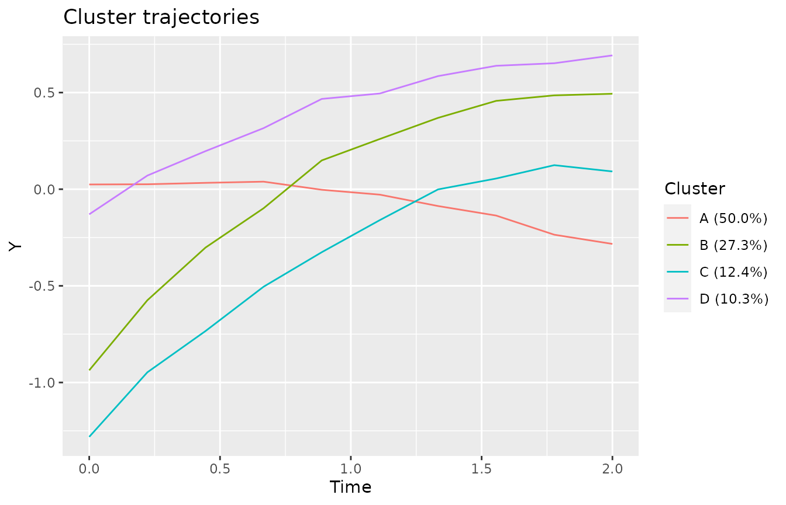We can get a better sense of the representation of the cluster trajectories when plotted against the trajectories that have been assigned to the respective cluster.
plot(kmlModel4)Cluster trajectories for KML model with 4 clusters, along with the assigned trajectories.
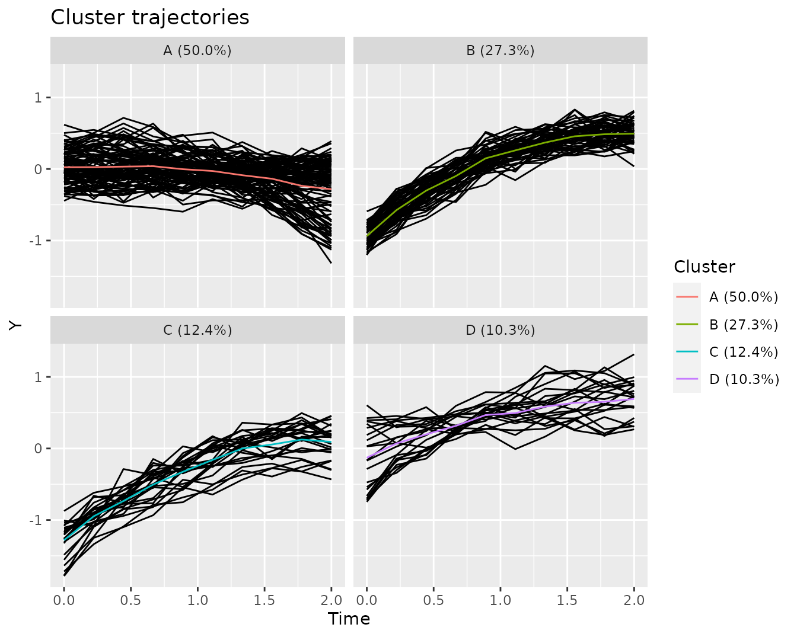The list of currently supported internal model metrics can be obtained by calling the getInternalMetricNames function.
getInternalMetricNames()
#> [1] "AIC" "APPA" "BIC" "converged"
#> [5] "deviance" "entropy" "estimationTime" "logLik"
#> [9] "MAE" "MSE" "relativeEntropy" "RSS"
#> [13] "sigma" "WMAE" "WMSE" "WRSS"As an example, we will compute the APPA (a measure of cluster separation), and the WRSS and WMAE metrics (measures of model error).
The quantile-quantile (QQ) plot can be used to assess the model for structural deviations.
qqPlot(kmlModel4)
#> Loading required namespace: qqplotrQQ-plot of the selected KML model.
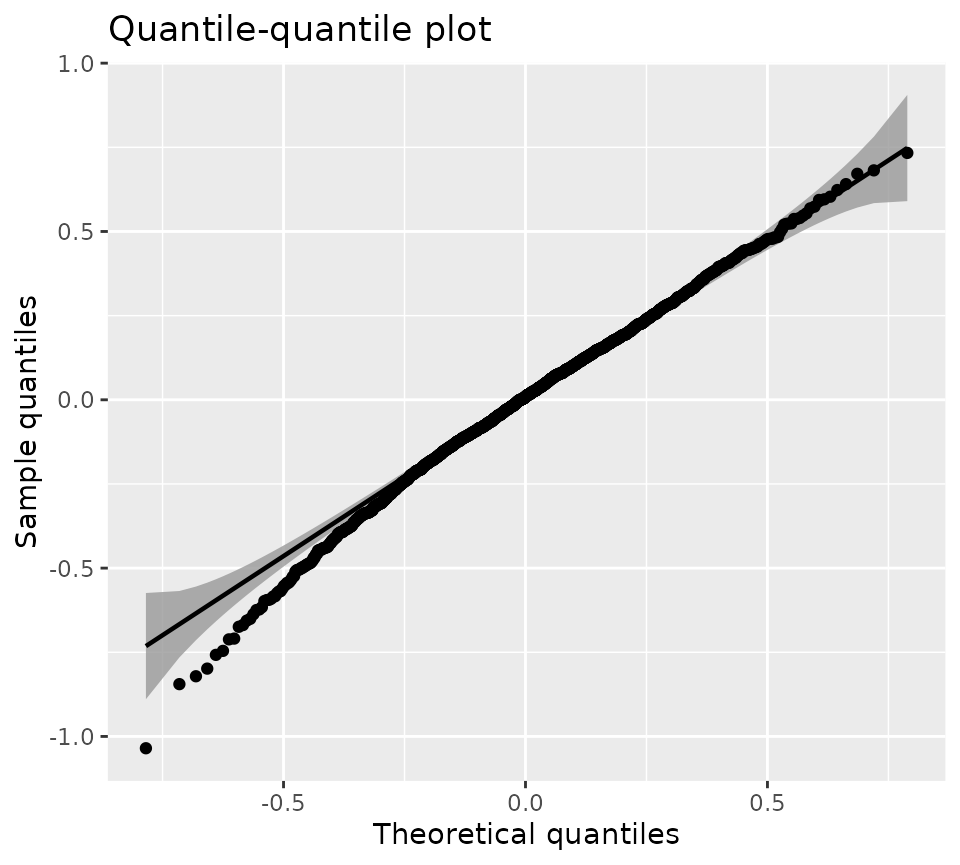Overall, the unexplained errors closely follow a normal distribution. In situations where structural deviations from the expected distribution are apparent, it may be fruitful to investigate the QQ plot on a per-cluster basis.
qqPlot(kmlModel4, byCluster = TRUE, detrend = TRUE)Cluster-specific detrended QQ-plot for the selected KML model.
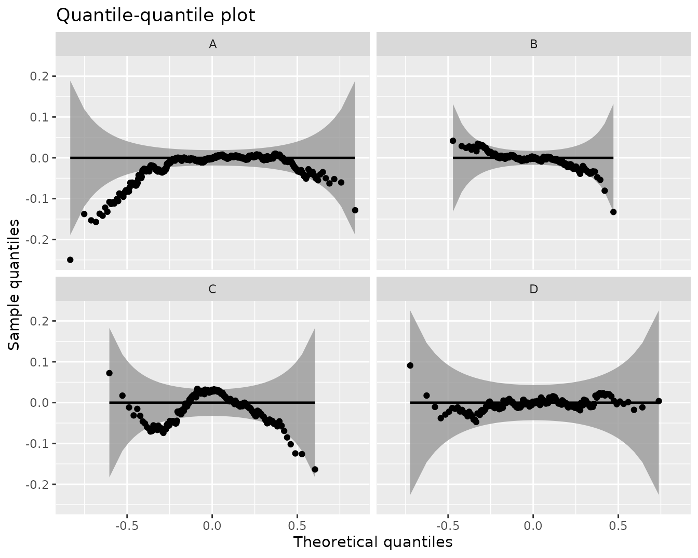The KML analysis has provided us with clues on an appropriate model for the cluster trajectories. We can use these insights to define a parametric group-based trajectory model (GBTM) with cluster trajectories represented by polynomials of order 2. We will use the GBTM implementation available from the lcmm package, using a B-spline trajectory of degree 3 from the splines package.
library(splines)
gbtmMethod <- lcMethodLcmmGBTM(fixed = Y ~ bs(Time), mixture = fixed)
gbtmMethod
#> lcMethodLcmmGBTM specifying "group-based trajectory modeling using lcmm"
#> mixture: fixed
#> classmb: ~1
#> time: getOption("latrend.time")
#> id: getOption("latrend.id")
#> nClusters: 2
#> init: "lme"
#> idiag: FALSE
#> nwg: FALSE
#> cor: NULL
#> convB: 1e-04
#> convL: 1e-04
#> convG: 1e-04
#> maxiter: 500
#> subset: NULL
#> na.action: 1
#> posfix: NULL
#> fixed: Y ~ bs(Time)We fit the GBTM for 1 to 5 clusters.
gbtmMethods <- lcMethods(gbtmMethod, nClusters = 1:5)
gbtmModels <- latrendBatch(gbtmMethods, data = latrendData, verbose = FALSE)
plotMetric(gbtmModels, c("logLik", "BIC", "WMAE"))Three cluster metrics for each of the GBTMs.
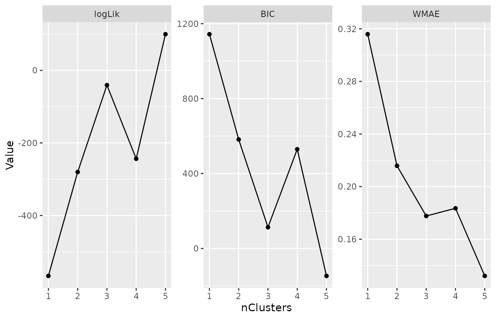All metrics clearly point to the 3-cluster solution.
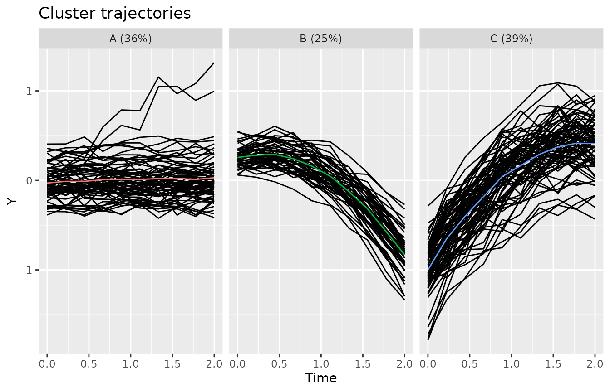
We have identified 3 apparent clusters via GBTM. However, we may wish to obtain a model that betters explains the within-cluster heterogeneity (as seen in the cluster trajectories plot above). We apply a growth mixture model (GMM) using trajectories represented by a second-order polynomial.
gmmMethod <- lcMethodLcmmGMM(fixed = Y ~ poly(Time, 2, raw = TRUE), mixture = fixed, idiag = TRUE)
gmmMethod
#> lcMethodLcmmGMM specifying "growth mixture model"
#> mixture: fixed
#> random: ~1
#> classmb: ~1
#> time: getOption("latrend.time")
#> id: getOption("latrend.id")
#> init: "lme.random"
#> nClusters: 2
#> idiag: TRUE
#> nwg: FALSE
#> cor: NULL
#> convB: 1e-04
#> convL: 1e-04
#> convG: 1e-04
#> maxiter: 500
#> na.action: 1
#> posfix: NULL
#> fixed: Y ~ poly(Time, 2, raw = TRUE)We fit the GMM for 1 to 5 clusters.
gmmMethods <- lcMethods(gmmMethod, nClusters = 1:5)
gmmModels <- latrendBatch(gmmMethods, latrendData, verbose = FALSE)
plotMetric(gmmModels, c("logLik", "BIC", "WMAE"))Three cluster metrics for each of the GMMs.
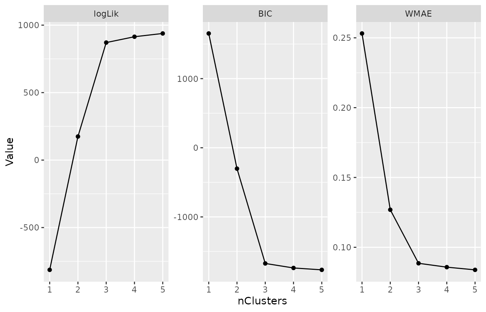Similar to the GBTM analysis, the metrics clearly point to the 3-cluster solution.
bestGmmModel <- subset(gmmModels, nClusters == 3, drop=TRUE)
plot(bestGmmModel)Cluster trajectories of the selected GMM, including the assigned trajectories.
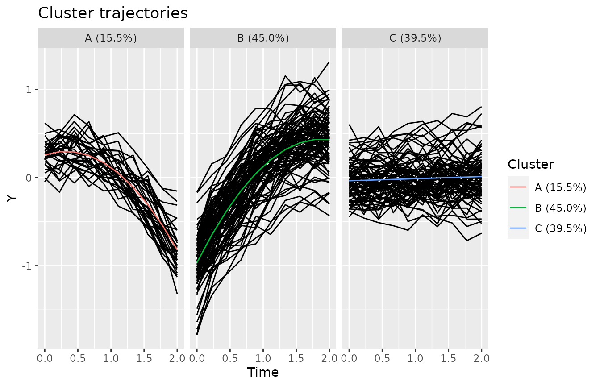
qqPlot(bestGmmModel, detrend = TRUE)Detrended QQ plot for the best GMM.
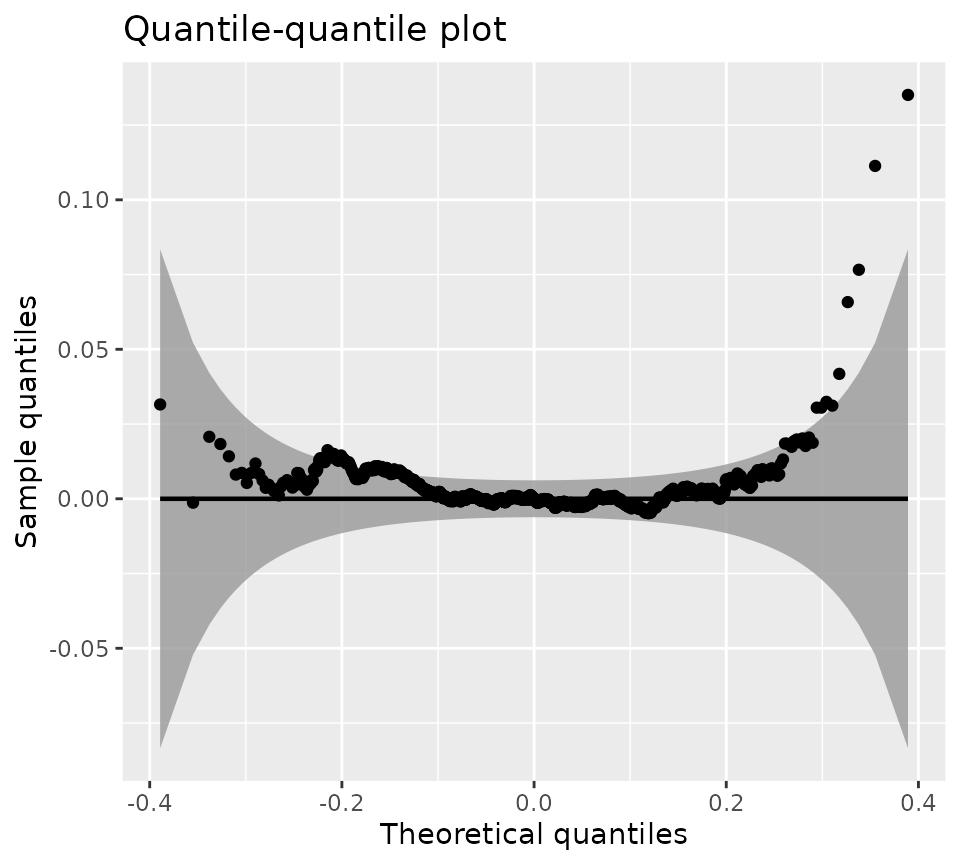As can be seen by the scale of the y-axis of the QQ plot, the deviations from the expected normal distributions are negligibly small.
Both the GBTM and GMM analysis indicated the data was best represented using 3 clusters. We are interested in identifying the best representation for the data. After all, despite the matching number of clusters, there may be differences between the models in terms of trajectory assignments are shape of the cluster trajectories.
Firstly, we compare the fit to the data by comparing the BIC, which indicates that the GMM model is marginally better than the GBTM model.
BIC(bestGbtmModel, bestGmmModel)
#> df BIC
#> bestGbtmModel 15 574.0813
#> bestGmmModel 13 -1672.9493Secondly, we compare the model fit errors, showing an identical error between models.
Thirdly, we can compare the weighted minimum MAE between the cluster trajectories of the models, as a measure of agreement in cluster trajectory shapes.
externalMetric(bestGbtmModel, bestGmmModel, 'WMMAE')
#> WMMAE
#> 0.05559308Lastly, we evaluate the agreement in trajectory assignments to the clusters using the adjusted Rand index (ARI). This intuitive index considers the co-assignments of trajectories, and corrects for agreements between the partitionings by random chance. A score of zero indicates a match no better than chance, whereas a score of 1 indicates a perfect agreement.
externalMetric(bestGbtmModel, bestGmmModel, 'adjustedRand')
#> adjustedRand
#> 0.4770003The ARI of 1.0 demonstrates that the cluster assignments of the models are identical.
Since we have established a preferred clustered representation of the data heterogeneity, we can now compare the resulting cluster assignments to the ground truth from which the latrendData data was generated.
Using the reference assignments, we can also plot a non-parametric estimate of the cluster trajectories. Note how it looks similar to the cluster trajectories found by our model.
plotClusterTrajectories(latrendData, response = "Y", cluster = "Class")Non-parametric estimates of the cluster trajectories based on the reference assignments.
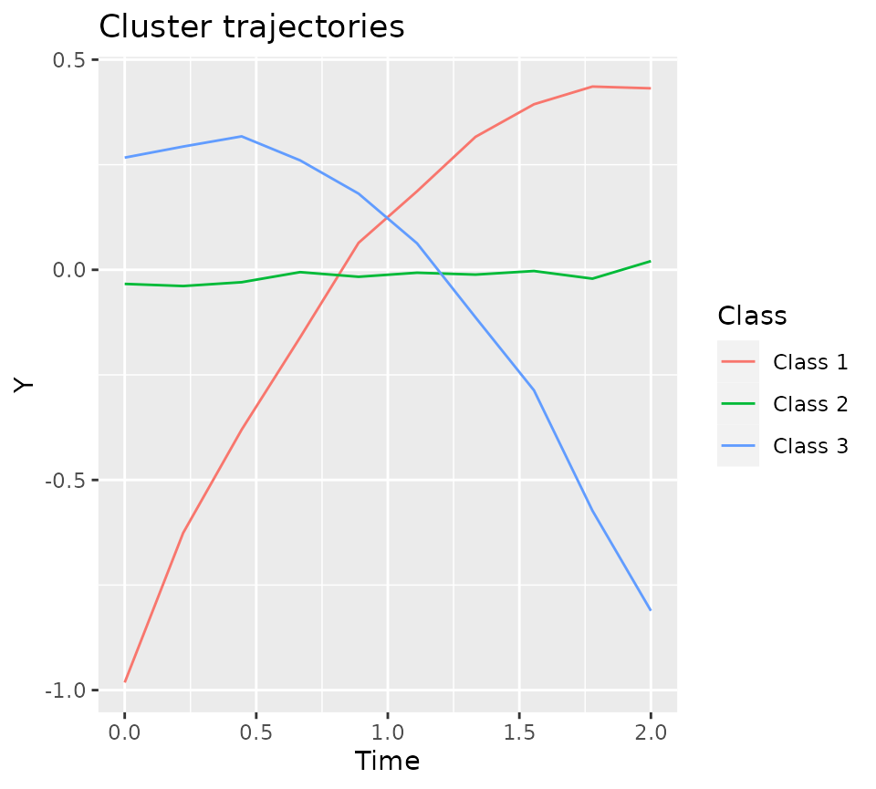In order to compare the reference assignments to the trajectory assignments generated by our model, we can create a lcModel object based on the reference assignments using the lcModelPartition function.
refTrajAssigns <- aggregate(Class ~ Id, data = latrendData, FUN = data.table::first)
refModel <- lcModelPartition(data = latrendData, response = "Y", trajectoryAssignments = refTrajAssigns$Class)
refModel
#> Longitudinal cluster model using part
#> lcMethod specifying "undefined"
#> no arguments
#>
#> Cluster sizes (K=3):
#> Class 1 Class 2 Class 3
#> 90 (45%) 80 (40%) 30 (15%)
#>
#> Number of obs: 2000, strata (Id): 200
#>
#> Scaled residuals:
#> Min. 1st Qu. Median Mean 3rd Qu. Max.
#> -3.33030 -0.59503 -0.02617 0.00000 0.59606 3.40645
plot(refModel)Cluster trajectories of the reference model.
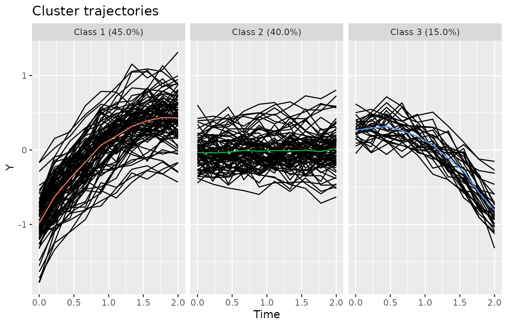By constructing a reference model, we can make use of the standardized way in which lcModel objects can be compared. A list of supported comparison metrics can be obtained via the getExternalMetricNames function.
getExternalMetricNames()
#> [1] "adjustedRand" "CohensKappa" "F" "F1"
#> [5] "FolkesMallows" "Hubert" "Jaccard" "jointEntropy"
#> [9] "Kulczynski" "MaximumMatch" "McNemar" "MeilaHeckerman"
#> [13] "MI" "Mirkin" "NMI" "NSJ"
#> [17] "NVI" "Overlap" "PD" "Phi"
#> [21] "precision" "Rand" "recall" "RogersTanimoto"
#> [25] "RusselRao" "SMC" "SokalSneath1" "SokalSneath2"
#> [29] "splitJoin" "splitJoin_ref" "VI" "Wallace1"
#> [33] "Wallace2" "WMMAE" "WMMAE_ref" "WMMSE"
#> [37] "WMMSE_ref" "WMSSE" "WMSSE_ref"Lastly, we compare the agreement in trajectory assignments via the adjusted Rand index.
externalMetric(bestGmmModel, refModel, "adjustedRand")
#> adjustedRand
#> 0.9883837With a score of externalMetric(bestGmmModel, refModel, "adjustedRand"), we have a near-perfect match. This result is expected, as the dataset was generated using a growth mixture model.